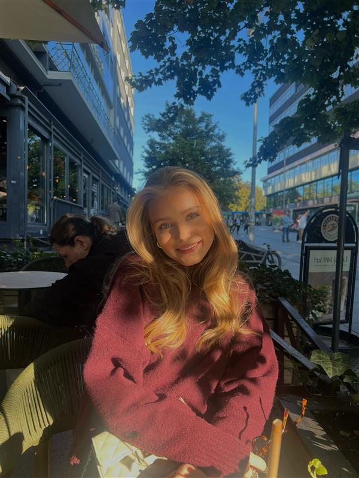

Ida Maria Eriksen
OM MEG
Hvem er jeg?
Jeg heter Ida og er 16 år gammel. Jeg er halvt norsk og halvt finsk, og har en lillebror som er 13 år. Jeg går på Nadderud videregående skole, i klasse 2STF. Favorittfargen min er mørkeblå, og jeg elsker pasta – det er uten tvil favorittmaten min! Jeg har bursdag 10. desember, og jeg liker spesielt godt høsten og sommeren. Jeg har blondt hår og blå øyne, og på fritiden liker jeg å reise, være med venner, trene og spille volleyball.